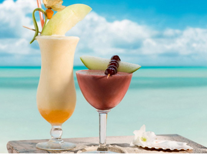
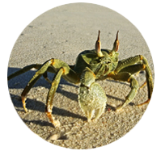
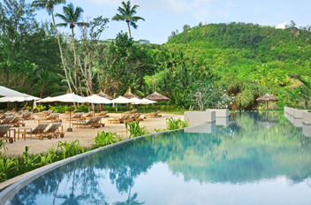
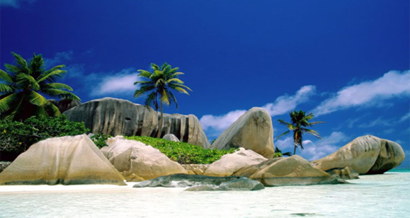
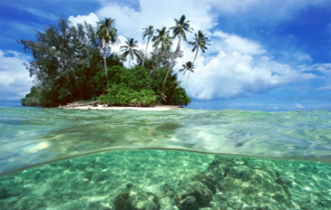
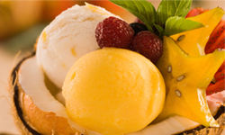
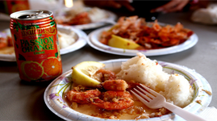
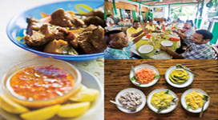
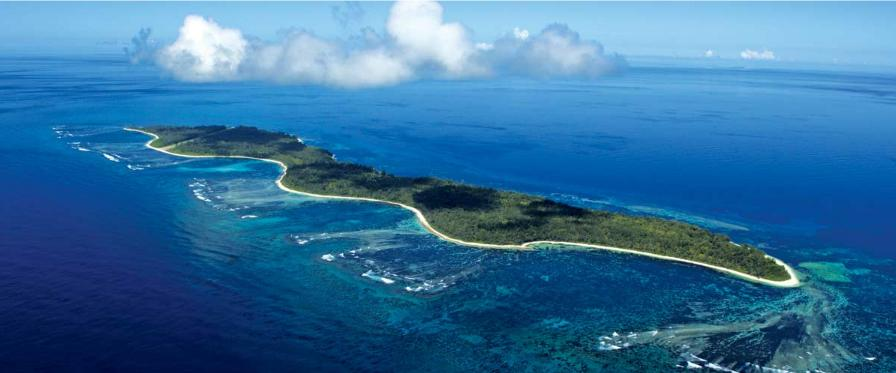
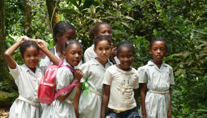

No Where, Now Here Seychelles Island.
세이셸에 도착한 늦은 밤, 생애 처음 만나는 바다와 하늘빛에 깜짝 놀라 첫 마디를 꺼냈다.
‘혹시 내가 천국에 온거야?’
- 베느와트 그루의 장편 소설 中
당신이 상상하는 천국이 인적이 드물고 오염되지 않은 원시의 바닷가라면 이곳은 천국이다. 당신이 생각하는 낙원이 해지는 곳에서 잔잔한 파도소리를 들으며 미풍에 잠드는 것이라면 이곳은 낙원이다. 베느와트 그루는 자신의 장편 소설 ‘이토록 지독한 떨림’에서 30년 동안 만남과 헤어짐을 반복한 조르주와 고뱅이 함께 보낸 가장 황홀했던 순간을‘세이셸에서 보낸 열흘’로 압축하고 있다. 느린 것은 평화롭고 평화로운 것은 아름다우니 ‘그와 함께라면 어디든 천국’이라 말하고 싶다면 말리지 않겠다. 그러나 ‘신혼여행 어디로 다녀왔어?’라는 질문에 언제든 자신 있게 말하고 싶다면 추천한다. 먼 길을 마다 않을 분명한 이유는 아마도 세이셸에서 찍은 사진들이 더 잘 설명해 줄 것이다.
Heavenly Surrounding for Honeymooners!
이제야 자신 있게 허니문을 추천한다. 이제껏 숱한 사람들에게 신혼여행지 추천을 주문 받고는 했다. 결혼도 안 사람이 신혼여행지를 어떻게 추천할 수 있을지 되묻고 싶지만 함부로 답할 수 없어 늘 대답을 피해온 지난 날이다. 그러나 이제 어떤 사람들에게는 그 일이 가능해질 것 같다.길고도 지쳤던 일상의 피로를 털어버릴 낙원이 필요한 사람, 시시각각 색을 달리하는 바다와하늘의 변신에 감탄하며 하루를 보내고 싶은 사람들에게 이 섬을 추천한다. 눈이 씻길 듯 맑은 자연이 존재하는 세이셀 섬으로.
|  |
While the raw beauty of the unspoiled.
섬들은 각기 다른 시간을 간직하고 살아간다.
|
|
Victoria of Mahe 가장 큰 섬, 수도 Victoria가 있는 곳. 65개가 넘는 해변이 즐비한 Mahe섬에는 세계적인 리조트가 존재한다. 900여 미터 높이의 바위산들은 마헤가 대양 한 가운데 위치한 섬이라는 사실을 망각하게 만든다.산 중턱에서 바라보는 빅토리아 시내와 항구는 어디에서 보든 한 장의 엽서처럼 느껴진다. |
 |
|  |
Isle de Palme 두 번째로 큰 섬 Praslin. 원래 이름은 Isle de Palme. 유네스코가 지정한 세계 자연 유산인 발레 드 매 국립공원이 있는 것으로 유명하다. 지상에서 가장 아름다운 해변으로 꼽히는 Anse Lazio와 세이셸 유일의 18홀 챔피언십 골프 코스도 이곳에 있다. 새소리를 들으며 걷다 보면 프랄린의 건강함이 온 몸으로 전해진다. |
|
La Digue Anse Source D’agent이라는, 화강암 바위와 파란 빛의 바다가 이루어내는 말로 형언할 수 없는 아름다움을 간직한 해변으로 유명하다. 다른 어떤 섬보다도 강렬한 태양을 가지고 있고, 마치 레고 블록으로 모든 것이 작고 화려한 것이 특징이다. BBC방송이 선정한 죽기전에 가 보아야 할 50 곳 중 순위 40위 인도양 최후의 낙원 라디게 섬. 이 섬들은 대체로 물이 나지 않으며 사람이 거주하는 곳도 거의 없다. 그러나 진기한 동물과 식물이 풍부하여 인도양 최후의 낙원이라고 불리우기도 한다 |
 |
Be Happy Like The Seychellois.
그들이 사는 방식을 한 마디로 표현하자면‘Be natural’이다.
갑작스러운 땀 배출로 엄청난 음식들을 섭취하며 살이 찔까 염려하는 사람들에게 그들은 말한다.
‘세이셸에서 걱정해? 다이어트는 돌아가서 해도 늦지 않아.’
참으로 세이셸 사람다운 말이다. 단순하게, 자연스럽게 살면서 행복을 놓지 않는 것이 세이셸 사람들의 방식이니까.

의외로 익숙한 맛, 크레올 푸드 허니문의 특성상 음식은 거의 호텔에서 먹게 되므로 현지 음식에 대한 걱정은 크지 않을 것이다. 크레올 음식은 우리와 비슷하게 적당히 자극적이고 적당히 감칠맛이 나는 향신료로 완성된다. 크레올 상의 기본은 생선과 밥이다. 많은 양념을 하지 않고 불에 구워낸 생선에 흰 쌀밥, 그리고 치킨과 야채 커리가 주메뉴다.여기에 망고나 파파야를 잘게 썰어 허브에 버무린 밑반찬이 곁들여진다. 고기보다는 생선과 채소가 많아 위에 부담이 없고, 크림 소스보다는 토마토나 칠리 소스를 사용하기 때문에 느끼하지 않다. 더군다나 모든 재료가 세이셸에서 자란 유기농이므로 식감 또한 매우 좋다.그들의 모습이나 생활상이 보여주는 이국적인 인상에 비한다면 크레올 음식은 오히려 걱정과 달리 너무나 익숙하게 느껴질 것이다.

세이셸 공화국은 아프리카 동쪽 인도양에 위치한 나라다.
115개의 섬은 화강암과 산호섬으로 이루어져 있고 가장 가까운 육지는 케냐지만 아프리카 국가들과는 완전히 다른 풍광을 지니고 있다.
전체 면적은 455평방킬로미터로 한반도의 1/400 정도다. 거대한 대륙이었던 곤드와나랜드가 바다에 가라앉을 때 가라앉지 않은 부분 중 가장 높은 봉우리에서 파생된 것이라고 전해진다. 덕분에 원시의 아름다움이 훼손되지 않은 채 간직된 것으로 유명하다. 지구상에서 자취를 감추고 있는 알다브라 거북과 바다에서 온 코코넛으로 알려진 코코 드 메르가 이곳에 서식한다.
Seychelles History....
세이셀의 역사는 짧지만 그들의 피는 꽤나 복잡하게 구성되어 있다. 1498년 포르투갈의 배가 동아프리카 경로를 통과하며 세이셸에 들렀을 때 이곳은 무인도였다.
이후 포르투갈의 대항해가 Vasco da Gama 1502년경 깨끗한 물을 얻기 위해 세이셸에 정박하기 시작했고, 동시에 아랍 상인의 발길이 이어졌다. 당시 프랑스의 지배자 Bertrand Francois Mahe de Labourdonnais는 세이셸에 프랑스 배를 파견하고 7개의 섬을 소유했다. 지금 가장 큰 섬의 이름은 그의 이름을 따 명명됐다. 1770년 첫 이민자가 도착하고, 마헤에는 7명의 유럽인과 123명의 노예가 삶의 터전을 잡았다. 이미 인도를 정복한 영국 역시 세이셸에 눈길을 돌렸고, 프랑스와 대립하기 시작, 승자는 영국이 되었다. 1814년 파리 조약으로 영국은 영유권을 쟁취하고 세이셸을 인근 섬인 모리셔스의 관할 하에 두었다. 영국의 직할 식민지로 두 세기 가까이 보낸 후 세이셸이독립을 이룬 것은 1976년, 불과 40년도 안 된 과거다.